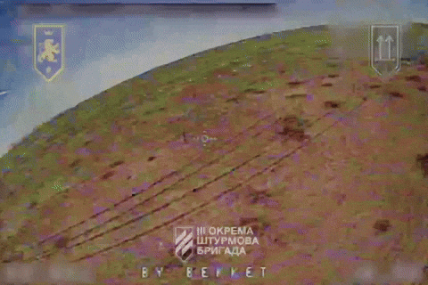

Отримайте відео удару FPV-дрона з вашим текстом
Ви можете додати довільний текст (наприклад, "BY BEKKET" на відео ⬆️) до On Screen Display FPV-дрона. Цей текст інтегрується в оригінальний відеопотік, завдяки якому пілоти керують дроном.Кадри успішного удару публікуються на офіційних сторінках військових підрозділів у соціальних мережах. Так будь-хто зможе перевірити їх автентичність.
Пілоти FPV-дронів
Галицький взвод 3 Окремої Штурмової Бригади Збройних Сил України.Виробник FPV-дронів
Підрозділ виробництва FPV-дронів ГО "Українські Мессершміти" — лабораторії БПЛА, розташованої в Києві, Україна. Ми виробляємо дрони для Галицького взводу. Це дає нам змогу налаштовувати дані On Screen Display дронів, які ми постачаємо.Як отримати відео удару з вашим текстом
1. Оберіть текст довжиною не більше 16 символів, який ви хочете додати до відео з дрона. Список доступних символів додається.{kind=link}
2. Зв'яжіться з нами для погодження тексту.
3. Задонатьте 2000 USD, використовуючи один із варіантів нижче. Надішліть нам підтвердження транзакції.
4. Ми надішлемо вам відео, щойно пілоти його опублікують. Це може зайняти від 2 до 10 (у найгіршому випадку) місяців. Актуальний статус та посилання для завантаження відео надаються в таблиці нижче.
Статуси публікації відео
| НАПИС | ПІДТВЕРДЖЕННЯ УДАРУ |
ВІДЕО УДАРУ |
ЗАВАНТАЖИТИ ВІДЕО |
|---|---|---|---|
| BY BEKKET | [1] | [1], [2] | MP4 | GIF |
| FCK PTN. WH | WIP | WIP | WIP |
| BY PONCHIK | WIP | WIP | WIP |
{kind=link}
Зв'яжіться з нами
- Telegram: @uamesser_video- E-mail: video@uamesser.com
Реквізити для донатів
PayPal: sidletska.polina@gmail.comUSDT (ERC20): 0xcbb9d844fb3d6eca72c12695c5e87b0a0c672396
USDT (TRC20): TB4h7HgdyJPH9ZZbnRfXXFCEH1DeDBFygq
BTC: 137dr8ZhTWxt8FNxVBnqFQfjX3yT4ftzWJ
MONERO: 85LD8j5iGhFF1VfMDegecadVxC3JmDHPPVQaL8k2wUHJdokk2gJ4f8N54vBvRnhhp7XgHnGu9WNUZD7Aaw433Ugz2NMqkH9
Будь-який донат вітається. Донати до 2000 USD будуть використовуватись на дослідження і розвиток команди FPV ГО "Українські Мессершміти".
Підписатись
- Telegram: @galician_platoon, @uamesser, @uamesser_fpv- Tiktok: @uamesser, @uamesser_fpv